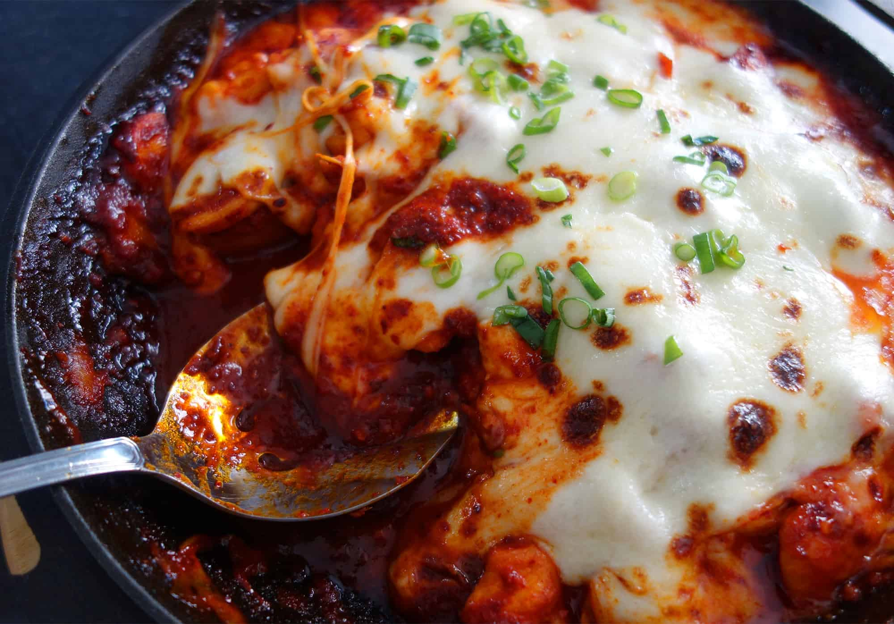

Chicken Buldak

Description
A chicken Korean dish with a spicy gochujang based sauce. The mozzerella cheese mellows out the spice for a super comforting meal.
Ingredients
- 2 pounds of chicken breast, cut into ¾ or 1 inch cubes
- ½ cup Korean hot pepper flakes (gochugaru)
- 2 to 3 tablespoons hot pepper paste
- 1 tablespoon soy sauce
- 3 tablespoons vegetable or corn oil
- ½ teaspoon ground black pepper
- ⅓ cup rice syrup (or corn syrup, sugar, honey)
- 6 large garlic cloves, minced
- 2 teaspoons ginger, minced
- 1 pound mozzarella cheese (optional), cut into small pieces
- 1 cup of sliced rice cake (optional)
- 1 green onion, chopped
- ¼ cup water
Directions
- Combine hot pepper flakes, hot pepper paste, soy sauce, 2 tablespoons vegetable oil, ground black pepper, rice syrup, garlic, and ginger in a bowl. Mix it well into a sweet and spicy paste.
- Add the chicken and mix well by hand.
- Heat up a skillet with 1 tablespoon vegetable oil. Add the sliced rice cakes and fry them for a few minutes. Turn them over with a spatula once or twice until both sides are crispy and light golden brown.
- Place the marinated chicken into a heavy pan, preferably cast iron. Use the water to rinse the bowl and get the last of the sauce into the pan. Cover and cook over medium high heat for 10 minutes. If you use a normal frying pan, it will take 7 to 8 minutes. Be sure not to burn the chicken.
- Uncover, stir and turn over the chicken with a wooden spoon. Add the rice cakes to the top of the chicken.
- Turn down the heat very low. Cover and let cook another 10 minutes, until the chicken is fully cooked. If you’re using cheese, pre-heat the oven broiler.
- When the chicken is cooked, put the cheese over the top. Slip it into the oven for a few minutes until the cheese is melted and bubbly.
- Remove and sprinkle with the chopped green onion. Serve hot.